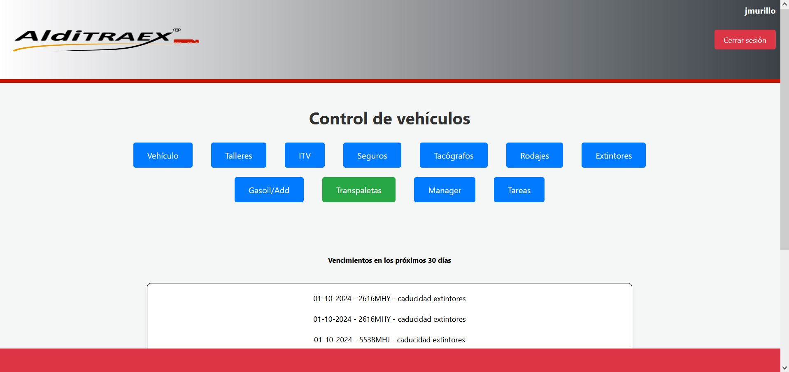
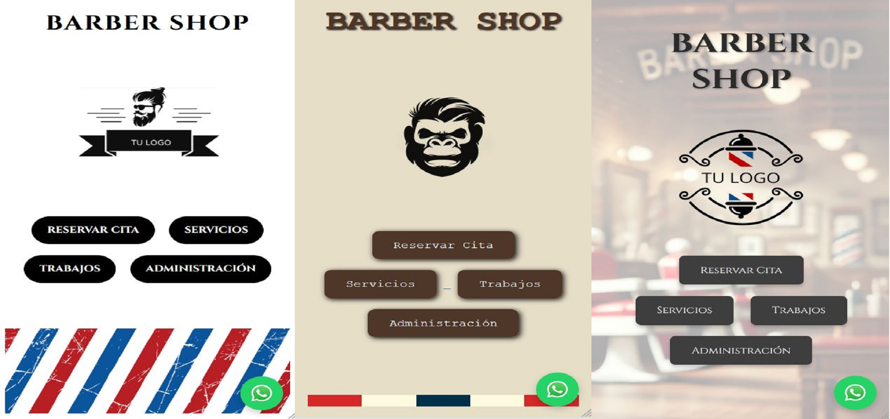
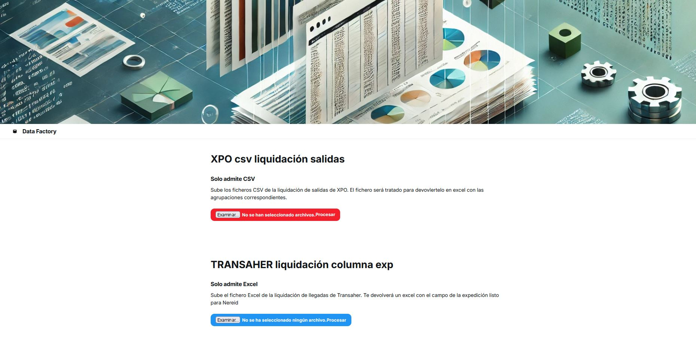

Portafolio

Gestión Vehículos
Aplicación para la gestión y mantenimiento de flotas de vehículos.

App Reserva Citas
Aplicación para la reserva de citas en una peluquería con interfaz intuitiva.

Conexiones FTP
Aplicación para gestionar transferencias seguras mediante conexiones FTP.

Procesado de Ficheros
Aplicación para el procesamiento de ficheros y datos a gran escala.